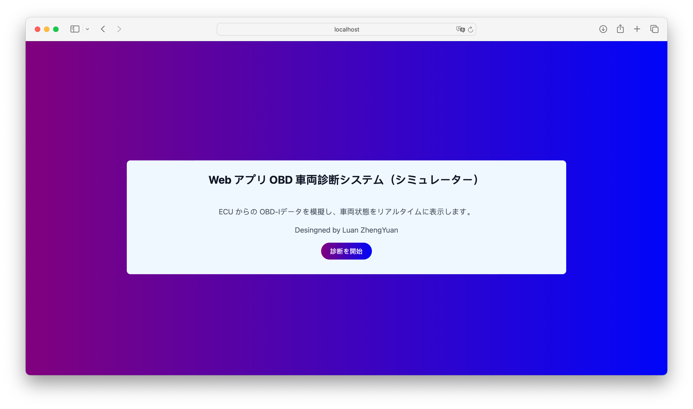
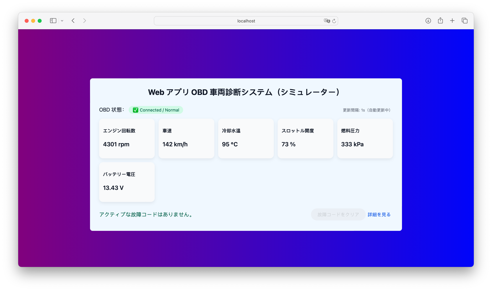
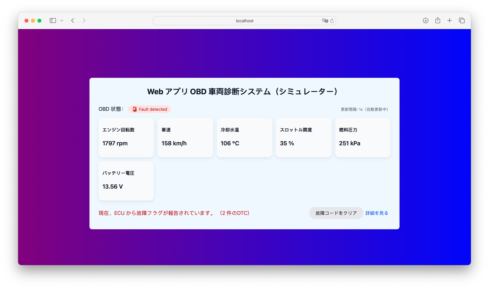

OBD 車両診断システムのテスト仕様書
OBD Vehicle Diagnostic System Test Specification
概要 / Overview
ここにこのページで紹介したい内容の概要を書きます。 プロジェクトの目的、背景、自分の役割などを 2〜3 文でまとめると読みやすいです。
画面イメージ / Screenshots



ポイント / Highlights
- ここに 1 つ目のポイント（例：テスト観点の整理、カバレッジ設計など）。
- ここに 2 つ目のポイント（例：実際に使ったツールや技術）。
- ここに 3 つ目のポイント（例：苦労した点・工夫した点）。